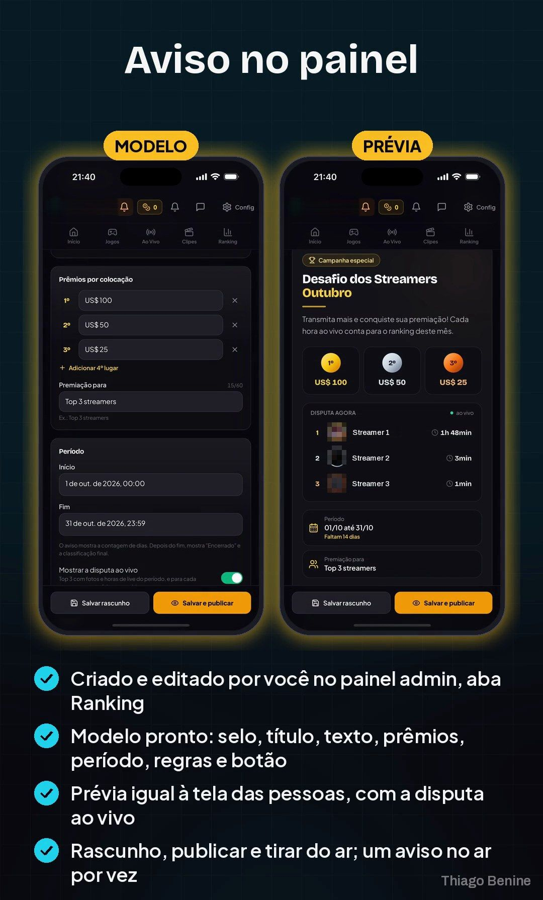
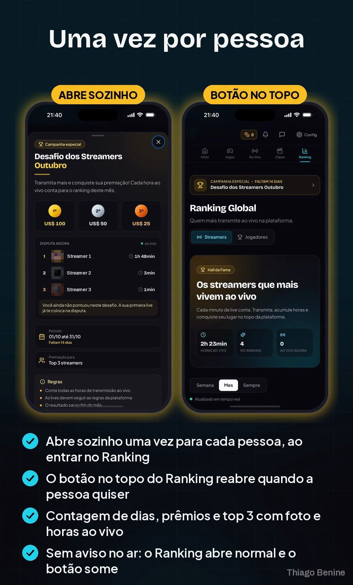
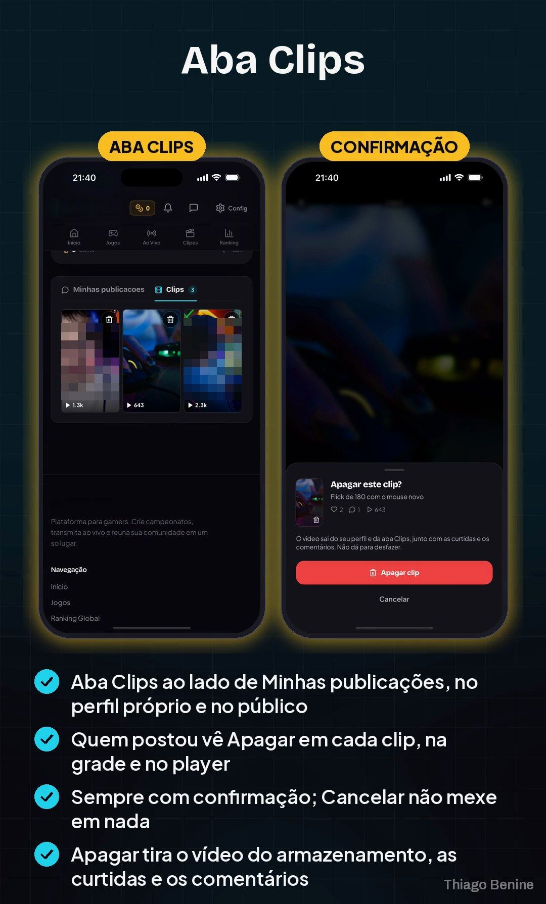

Ranking e aba de clips no app de streaming de games
Aviso de posição no ranking e uma aba nova para os clips.




Sobre o projeto
A plataforma de streaming de games queria mais motivos para os usuários voltarem ao app. Foram criados o aviso de ranking e a aba de clips, integrados ao app existente e entregues em novas builds.
O que foi entregue
- Aviso de ranking
- Aba de clips
- Novas builds